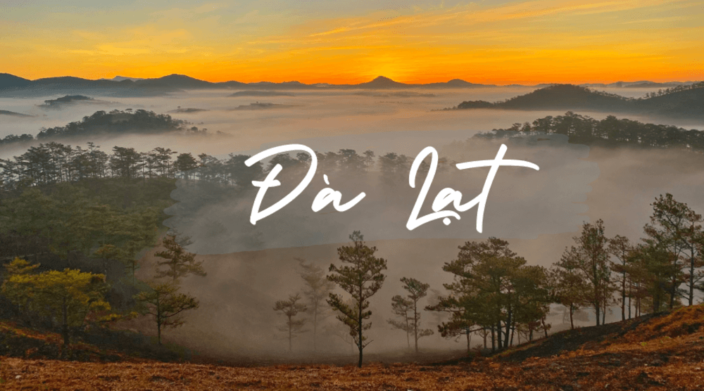

Giới thiệu về Đà Lạt: TẤT TẦN TẬT thông tin về xứ sở sương mù
- Vị trí địa lý Đà Lạt: Thành phố Đà Lạt nằm trên cao nguyên Lâm Viên được coi là địa điểm du lịch hấp dẫn tại Việt Nam. Diện tích Đà Lạt rộng khoảng 400 km2 và nơi đây là thành phố loại 1 trực thuộc tỉnh ủy Lâm Đồng.
- Khí hậu:
+ Mùa mưa: Từ tháng 4 đến hết tháng 10, Đà Lạt chìm trong mùa mưa với không gian phủ đầy sắc hoa tươi mới. Trong mùa này, không khí lạnh ẩm và những cơn mưa thường xuyên làm tăng sự hứng thú và cảm nhận về thiên nhiên của du khách.
+ Mùa khô: Từ tháng 11 đến tháng 3 năm sau, Đà Lạt chuyển sang mùa khô với những ngày nắng ấm, không mưa và trời ít mây. Ban ngày, ánh nắng dịu nhẹ cùng không khí mát mẻ. Về đêm, nhiệt độ có xu hướng giảm, mang đến một không gian se lạnh đặc trưng của đồng bằng cao nguyên.
